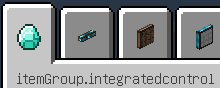
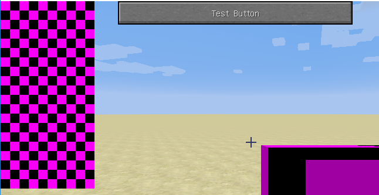

版本信息
你使用的IDE：IntelliJ IDEA 2020.1
Forge版本: 14.23.5.2847
Minecraft版本: 1.12.2
Mapping 文件版本: stable_39
出错图


错误情况简述
ResourceLocation定义的gui 中的图片资源加载不出来
后来发现assets中的所有资源都读取不到（语言文件等）
我怀疑是不是编译时资源文件没放进去，但是找到了build文件夹发现里面有那些文件，不知道是不是我找错了。
报错日志
[07:54:34] [Client thread/WARN] [minecraft/TextureManager]: Failed to load texture: integratedcontrol:textures/gui/bg2.png
java.io.FileNotFoundException: integratedcontrol:textures/gui/bg2.png
at net.minecraft.client.resources.SimpleReloadableResourceManager.getResource(SimpleReloadableResourceManager.java:69) ~[SimpleReloadableResourceManager.class:?]
at net.minecraft.client.renderer.texture.SimpleTexture.loadTexture(SimpleTexture.java:34) ~[SimpleTexture.class:?]
at net.minecraft.client.renderer.texture.TextureManager.loadTexture(TextureManager.java:69) [TextureManager.class:?]
at net.minecraft.client.renderer.texture.TextureManager.bindTexture(TextureManager.java:44) [TextureManager.class:?]
at shBLOCK.integratedcontrol.gui.RemoteControlGui.CustomBackground.drawBackground(CustomBackground.java:46) [CustomBackground.class:?]
at shBLOCK.integratedcontrol.gui.RemoteControlGui.RemoteControlUseGui.drawScreen(RemoteControlUseGui.java:23) [RemoteControlUseGui.class:?]
at net.minecraftforge.client.ForgeHooksClient.drawScreen(ForgeHooksClient.java:396) [ForgeHooksClient.class:?]
at net.minecraft.client.renderer.EntityRenderer.updateCameraAndRender(EntityRenderer.java:1177) [EntityRenderer.class:?]
at net.minecraft.client.Minecraft.runGameLoop(Minecraft.java:1209) [Minecraft.class:?]
at net.minecraft.client.Minecraft.run(Minecraft.java:442) [Minecraft.class:?]
at net.minecraft.client.main.Main.main(Main.java:118) [Main.class:?]
at sun.reflect.NativeMethodAccessorImpl.invoke0(Native Method) ~[?:1.8.0_201]
at sun.reflect.NativeMethodAccessorImpl.invoke(NativeMethodAccessorImpl.java:62) ~[?:1.8.0_201]
at sun.reflect.DelegatingMethodAccessorImpl.invoke(DelegatingMethodAccessorImpl.java:43) ~[?:1.8.0_201]
at java.lang.reflect.Method.invoke(Method.java:498) ~[?:1.8.0_201]
at net.minecraft.launchwrapper.Launch.launch(Launch.java:135) [launchwrapper-1.12.jar:?]
at net.minecraft.launchwrapper.Launch.main(Launch.java:28) [launchwrapper-1.12.jar:?]
at sun.reflect.NativeMethodAccessorImpl.invoke0(Native Method) ~[?:1.8.0_201]
at sun.reflect.NativeMethodAccessorImpl.invoke(NativeMethodAccessorImpl.java:62) ~[?:1.8.0_201]
at sun.reflect.DelegatingMethodAccessorImpl.invoke(DelegatingMethodAccessorImpl.java:43) ~[?:1.8.0_201]
at java.lang.reflect.Method.invoke(Method.java:498) ~[?:1.8.0_201]
at net.minecraftforge.gradle.GradleStartCommon.launch(GradleStartCommon.java:97) [start/:?]
at GradleStart.main(GradleStart.java:25) [start/:?]
相关代码
<zh_cn.lang>
itemGroup.integratedcontrol=集成控制
item.integratedcontrol.remote_control.name=远程控制终端
key.integratedcontrol.category=集成控制
key.integratedcontrol.edit_remote_hotkey=编辑远程控制终端
<RemoteControlItem.java>
package shBLOCK.integratedcontrol;
import shBLOCK.integratedcontrol.gui.RemoteControlGui.RemoteControlEditGui;
import shBLOCK.integratedcontrol.gui.RemoteControlGui.RemoteControlUseGui;
import net.minecraft.client.Minecraft;
import net.minecraft.entity.player.EntityPlayer;
import net.minecraft.item.Item;
import net.minecraft.item.ItemStack;
import net.minecraft.util.ActionResult;
import net.minecraft.util.EnumActionResult;
import net.minecraft.util.EnumHand;
import net.minecraft.world.World;
public class RemoteControlItem extends Item {
public static final String NAME = "remote_control";
public static final String REGISTRY_NAME = IntegratedControl.MODID + ":" + NAME;
public RemoteControlItem() {
this.setMaxStackSize(1);
this.setTranslationKey(IntegratedControl.MODID + "." + NAME);
this.setRegistryName(REGISTRY_NAME);
this.setCreativeTab(IntegratedControl.INTEGRATED_CONTROL_TAB);
}
public void openEditGui() {
Minecraft.getMinecraft().displayGuiScreen(new RemoteControlEditGui());
}
@Override
public ActionResult<ItemStack> onItemRightClick(World world, EntityPlayer player, EnumHand hand) {
System.out.println();
ItemStack item = player.getHeldItem(hand);
Minecraft.getMinecraft().displayGuiScreen(new RemoteControlUseGui());
return new ActionResult<>(EnumActionResult.SUCCESS, item);
}
}
<RemoteControlUseGui.java>
package shBLOCK.integratedcontrol.gui.RemoteControlGui;
import shBLOCK.integratedcontrol.IntegratedControl;
import net.minecraft.client.gui.GuiButton;
import net.minecraft.client.gui.GuiScreen;
import net.minecraft.util.ResourceLocation;
public class RemoteControlUseGui extends GuiScreen {
public CustomBackground Background;
public RemoteControlUseGui() {
Background = new CustomBackground(new ResourceLocation(IntegratedControl.MODID, "textures/gui/bg2.png"), 5, 10, 16, 16, 16, 16);
}
@Override
public void initGui() {
this.buttonList.add(new GuiButton(0, 100, 0, "Test Button"));
}
@Override
public void drawScreen(int mouseX, int mouseY, float partialTicks) {
super.drawScreen(mouseX, mouseY, partialTicks);
this.Background.drawBackground(this.mc);
}
@Override
public boolean doesGuiPauseGame() {
return false;
}
@Override
public void actionPerformed(GuiButton button) {
button.width += 10;
}
}
 行吧。
行吧。{kind=link}